<nav class="bg-blue-600 text-white p-4">
  <div class="container mx-auto flex justify-between items-center">
    <!-- Logo -->
    <a routerLink="/" (click)="closeMenu()">
      
    </a>

    <!-- Botón de menú para móviles -->
    <button class="md:hidden text-white" style="margin-left:auto;" (click)="toggleMenu()">
      <svg xmlns="http://www.w3.org/2000/svg" class="h-6 w-6" fill="none" viewBox="0 0 24 24" stroke="currentColor">
        <path stroke-linecap="round" stroke-linejoin="round" stroke-width="2" d="M4 6h16M4 12h16m-7 6h7" />
      </svg>
    </button>

    <!-- Menú de navegación -->
    <div class="flex items-center md:space-x-4">
      <ul
        class="flex flex-col md:flex-row md:space-x-6 md:static absolute top-20 left-0 w-full bg-blue-600 md:bg-transparent md:w-auto transition-all duration-300"
        [ngClass]="{'hidden': !menuOpen, 'block': menuOpen}">
        <li class="w-full text-center md:w-max"><a routerLink="/about" routerLinkActive="active" class="hover:text-gray-200 block py-2 px-4 md:p-0 whitespace-nowrap" (click)="closeMenu()">{{ 'nav.about' | translate }}</a></li>
        <li class="w-full text-center md:w-max"><a routerLink="/portfolio" routerLinkActive="active" class="hover:text-gray-200 block py-2 px-4 md:p-0 whitespace-nowrap" (click)="closeMenu()">{{ 'nav.portfolio' | translate }}</a></li>
        <li class="w-full text-center md:w-max"><a routerLink="/contact" routerLinkActive="active" class="hover:text-gray-200 block py-2 px-4 md:p-0 whitespace-nowrap" (click)="closeMenu()">{{ 'nav.contact' | translate }}</a></li>

        <!-- Redes sociales (en el menú desplegable en móviles) -->
        <li class="flex justify-center space-x-4 py-4 md:hidden">
          <a href="https://github.com/rosscalpe" target="_blank" class="fab hover:text-gray-200">
            <i class="fab fa-github"></i>
          </a>
          <a href="https://instagram.com/rosscalpe" target="_blank" class="fab hover:text-gray-200">
            <i class="fab fa-instagram"></i>
          </a>
          <a href="https://linkedin.com/in/rosemary-calderon-pereira/" target="_blank" class="fab hover:text-gray-200">
            <i class="fab fa-linkedin"></i>
          </a>
        </li>

        <!-- Language switcher en móvil -->
        <li class="flex justify-center py-4 md:hidden">
          <app-language-switcher></app-language-switcher>
        </li>
      </ul>

      <!-- Redes sociales (en el menú normal para escritorio) -->
      <div class="hidden md:flex space-x-4">
        <a href="https://github.com/rosscalpe" target="_blank" class="fab hover:text-gray-200">
          <i class="fab fa-github"></i>
        </a>
        <a href="https://instagram.com/rosscalpe" target="_blank" class="fab hover:text-gray-200">
          <i class="fab fa-instagram"></i>
        </a>
        <a href="https://linkedin.com/in/rosemary-calderon-pereira/" target="_blank" class="fab hover:text-gray-200">
          <i class="fab fa-linkedin"></i>
        </a>
      </div>

      <!-- Language switcher en desktop -->
      <div class="hidden md:block">
        <app-language-switcher></app-language-switcher>
      </div>
    </div>
  </div>
</nav>
